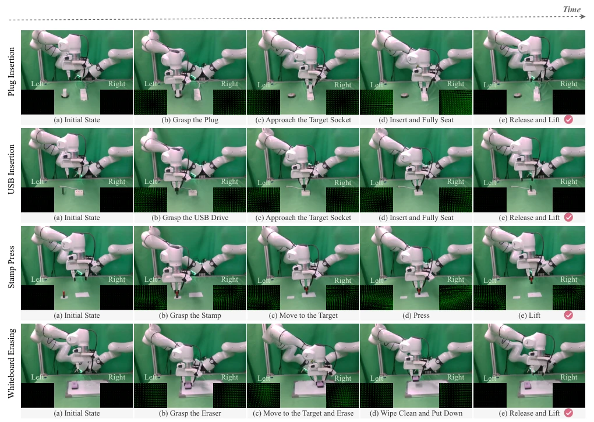
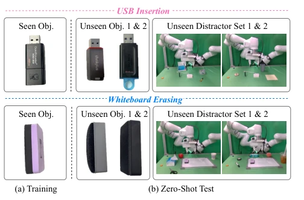

Figure 1: τ Framework. Multi-view visual observations, tactile signals, and language instruction are encoded into modality- specific tokens and fused by the large language model in the vision-language-action model for action chunk prediction. During training, an auxiliary JEPA-style self-supervised objective predicts future visual representations from action-conditioned latent features, enabling predictive multimodal representation learning without pixel-level reconstruction. Notably, the JEPA-style self-supervised learning is applied only during training and is removed during inference.
Figure 5: Success rates for USB insertion and white- board erasing under in-distribution, object-generalization, and scene-generalization settings.
其他图片Other Figures

Figure 3: Qualitative results of policy execution.

Figure 4: Training and zero-shot testing settings for USB insertion and whiteboard erasing tasks. The models are trained on seen objects and tested on unseen objects and distractor sets to assess their generalization to novel objects and complex scenes.